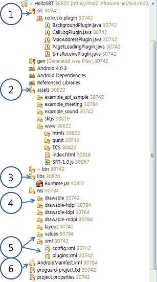
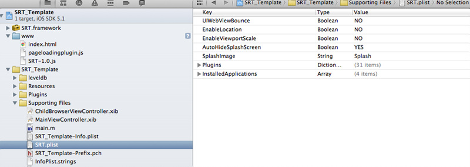

1. Cornerstone Runtime 기본구조
1.1 공통 Runtime 기본구조

Cornerstone Runtime은 크게 platform 별 Native Layer와 Java Script Layer의 2가지의 layer로 나뉘어 진다.
Native layer는 각 플랫폼 별 Webview를 포함하여 사용한다.
Native layer는 각 플랫폼 별 사용되는 언어로 개발되어 있으며 JavaScript layer에서 요청된 DeviceAPI 를 플랫폼 SDK를 이용하여 처리된다.
1.1.1 Runtime JavaScript layer
Java Script layer는 웹앱에서 사용하기 위한 JavaScript API들을 선언 및 정의 하며 이를 Runtime의 native layer와 연결하는 역할을 한다.
SRT-x.x.js 형태로 배포 되며 Runtime이 업데이트 될때마다 버전명이 올라간다. > 2012.10.08 기준 SRT-1.0.js 배포
SRT-x.x.js 는 크게 두가지 역할로 구분된다.
- DeviceAPIs : 웹앱에서 사용하는 JavaScript API ProtoType 정의
- exec module: JavaScript APIs 를 Native Runtime Library와 연결하여 통신하는 공통 인터페이스 모듈
- js prompt()함수를 native 단에서 재정의 하여 JavaScript와 native의 연결 통로가 된다.
1.2 Android Runtime 기본 구조
1.2.1 Android Native Layer
Android Webview를 이용하여 Runtime JavaScript Library에서 호출된 API를 그에 해당하는 Native Class를 실행하고 성공/실패 콜백 전달하는 모듈
WebApp에서 Device의 특정 기능을 수행 및 webview를 사용하기 위하여 Runtime.jar 가 배포된다.
- Runtime.jar는 Java class로 구성되어 있는 Android용 native library 이다.
- Runtime.jar는 web app의 index.html을 load하는 파일을 포함 하고 있다.
- Runtime.jar는 Cornerstone Runtime에서 제공하는 DeviceAPI가 포팅되어 있다.
- Runtime.jar는 Native code로 모듈화 되어 Android SDK 로 부터 작업을 수행하고 결과를 JavaScript layer에 반환 한다.
1.2.2 Android Project Files
Android용 webapp을 개발하기 위해서는 아래 와 같은 project file 들을 세팅하여야 한다.
1) AndroidManifest.xml
- WebApp의 고유한 package 명 설정
2) res/value/string.xml
- 실제 단말에서 보여지는 WebApp의 이름 설정
3) res/drawable/icon.png
- 실제 단말에서 보여지는 아이콘 설정
1.3 IOS Runtime 기본 구조
1.3.1 IOS Native Layer

UIWebview를 이용하여 Runtime JS Library에서 불리는 API를 그에 해당하는 Native Class를 실행하고 성공/실패 콜백 전달 모듈
- RuntimeDelegate : UIWebview를 생성하고 Runtime API를 연동
- ViewController : UIWebview와 Device를 연결하고 Orientaion을 제어
- Commands : JS API 를 Native Platform API를 통해서 구현
- Utils : JSON / Base64 / ExtendMutableArray / ExtendMutableDictionary 라이브러리
SRT.framework 라는 이름으로 배포된다.
1.3.2 IOS Project Files
iOS용 webapp을 개발하기 위해서는 아래 와 같은 project file 들을 세팅하여야 한다.
1) SRT_Template-Info.plist
- iOS 어플 설정을 위한 프로젝트 파일
2) SRT.plist
- Cornerstone Runtime 설정을 위한 프로젝트 파일
3) Resources
- icon / splash screen 용 이미지 파일들
2. Cornerstone Runtime 웹앱 개발
2.1 Android Runtime 웹앱 개발 환경
- Authoring Tool을 이용하여 Android 용 웹앱 개발환경을 다운로드 받을 수 있다.
- 여기에 링크가 들어간다.
2.1.1 Android Runtime 웹앱 개발 환경 구조

1) src - plugin 개발시에 작성하는 Java Native Code
2) asset - 실제 웹앱의 웹 리소스(HTML/CSS/JS/IMG) 와 Runtime JavaScript Library 가 저장되는 위치
- assets/www : 웹앱의 저장 위치
- assets/www/index.html : 웹앱의 첫 실행 파일
3) libs - Webview 를 이용하여 Device 의 단말 접근 기능을 제공하는 DeviceAPI가 포팅된 Android library 위치
- Runtime.jar : webview 및 DeviceAPI가 포팅된 JAVA library
4) drawable - device에 보여지는 icon 및 splash image를 저장하는 위치
- icon.png : device에 보여지는 icon
- splash.png : 웹앱 실행 초기에 보여지는 splash image (optional)
5) values , xml - 웹앱의 name 및 runtime setting을 할 수 있는 폴더
- value/string.xml : 웹앱의 name을 세팅하는 파일
- xml/config.xml : device의 orientation(portrait , landscape , audo) 및 splash image를 세팅 하는 파일
6) AndroidManifest.xml : 하나의 Native Application으로써의 고유한 Package 명을 지정하는 파일, 하드웨어 가속 GPU 렌더링 사용여부를 지정하는 파일.
2.1.2 Android 웹앱 개발 절차
step 1. Authoring tool을 이용해 Android Web App Template를 받으면 Lib 폴더에 Runtime.jar가 기본으로 포함되어 있다.

step 2. 웹앱 개발자는 assets 폴더 내부에 .html , .js , .css 와 같은 웹앱 소스 파일을 작성하여야 하며 시작 파일은 반드시 index.html 이어야 한다. SRT-1.0.js는 웹앱 개발 환경 template의 기본 포함된 파일이다.

초기 페이지인 index.html을 생성한다.
<html> <head> <script language="javascript"></script> </head> <body> Hello Runtime. </body> </html>특정 웹페이지 내부에서 Runtime DeviceAPI를 사용하고 할 때에는 아래와 같이 JavaScript Library를 선언한다.
<script type="text/javascript" charset="utf-8" src=*../path/SRT-1.0.js"></script>웹앱에서의 단말의 해상도에 상관 없이 스크린에 fix되게 출력하는 방법
- 모바일 웹에서는 Device에 따라 환경적인 차이가 많아서 고려해야 할 사항들이 몇 가지 있다. Web Page를 Device 해상도 별로 제작 할 수 있는 것도 아니고 어떤 Device가 접속했는지를 일일이 구분하여 서버상에서 Page를 내려줄 수 있는 것도 아니다. 이런 크로스브라우징 문제를 해결하기 위해서 Media query를 사용하기를 권장한다.
해상도가 다른 단말에 따라 화면에 fix하게 출력 하고 싶을 경우 아래와 같이 Media Query를 이용하여 device 해상도에 맞는 css를 적용하도록 한다.
Style.css example
body {background-color:#000;} /* Galaxy Note 1 */ @media screen and (max-width:801px) { #wrapper img{width:800px; height:1204px;}} /* Ipad2 */ @media screen and (max-width:769px) { #wrapper img{width:769px; height:1204px;}} /* Galaxy S3 */ @media screen and (max-width:721px) { #wrapper img{width:720px; height:1204px;}} /* Galaxy S2 */ @media screen and (max-width:481px) { #wrapper img{width:480px; height:724px;}}Index.html example
<!DOCTYPE HTML> <html> <head> <meta http-equiv="Content-Type" content="text/html; charset=utf-8" /> <meta name = "viewport" content = "user-scalable=no, width=device-width, target-densitydpi=device-dpi"/> <title>Media query test</title> <link href="style.css" rel="stylesheet" type="text/css" /> <script type="text/javascript"> </script> </head> <body> <div id="wrapper"> <img src="img/bg.jpg" /> </div> </body> </html>
step 3. Res 폴더 내부에 웹앱 개발자가 사용하고자 하는 아이콘 이미지를 icon.png의 이름으로 삽입한다.

step 4. AndroidManifest.xml 파일 내부의 package 명을 개발자가 변경을 해줘야 한다. 이는 고유한 값으로 Android 시스템 내부의 중복된 어플이 설치되지 않도록 한다.

기본적인 Manifest 파일의 형식
<manifest xmlns:android="http://schemas.android.com/apk/res/android" android:windowSoftInputMode="adjustPan" package="co.kr.skt.testapp.test" android:versionName="1.1" android:versionCode="5">GPU 하드웨어 가속 렌더링을 사용하고 싶다면 아래와 같이 application tag에 hardwareAccelerated 를 true로 설정 한다. 이는 웹 앱이 디바이스에서 사용하는 메모리 점유율을 늘어나지만 부드러운 2D image 렌더링을 가능하게 한다. (default는 생략됨)
<application android:icon="@drawable/icon" android:label="@string/app_name" android:hardwareAccelerated="true" android:debuggable="true">
step 5. Application의 실제 단말기에서 보여지는 이름을 string.xml의 app_name에 정의한다.

string.xml
<resources> <string name="app_name">테스트웹앱</string> </resources>
step 6. res/xml/config.xml 의 orientation , splashscreen , screen mode preference를 이용하여 웹앱의 방향(가로/세로)과 splash image(html 이 로딩 되기 전에 보여지는 image)와 마지막으로 Screen Mode(네비게이터 바, 타이틀바 사용여부)를 세팅 할 수 있다. 이는 선택 사항으로 웹앱 개발자가 작성하지 않으면 default 값을 따르게 된다.

1) 웹앱의 방향(default 는 auto)
- 가로 방향
<preference name="orientation" value="landscape"/>
- 세로 방향
<preference name="orientation" value="portrait"/>
- 자동
<preference name="orientation" value="auto"/>
2) splash image(default 는 splash image를 사용하 않음)
- value값인 splashskt.png가 res/drawable 폴더 내부에 존재 하여야 한다.
> image area
<preference name="splashscreen" value="splashskt"/>
3) screen Mode(default는 네비게이터 바와 타이틀 바가 모두 보임)
- 네비게이터 바와 타이틀 바가 모두 보임
<preference name="screenmode" value="default"/>
- 네비게이터 바만 보임 , 타이틀 바는 안보임
<preference name="screenmode" value="maximized"/>
- 네비게이터 바와 타이틀 바가 모두 안보임
<preference name="screenmode" value="fullscreen"/>
step 7. Eclipse의 빌드 아이콘을 이용하여 Android App을 빌드하여 Device에 정상적으로 설치됨을 확인한다.

step 8. Device에 WebApplication이 정상적으로 출력됨을 확인한다.

2.2 iOS Runtime 웹앱 개발 환경
- Authoring Tool을 이용하여 iOS 용 웹앱 개발환경을 다운로드 받을 수 있다.
- 여기에 링크가 들어간다.
- iOS용 웹앱 개발환경은 Xcode 버전 4.3, Mac OSX 버전 10.7.4 Lion 기준으로 개발되었으며 iOS 버전은 5.0 이다.
2.2.1 iOS Runtime 웹앱 개발 환경 구조

1) SRT.framework - Cornerstone Runtime Library
2) www - 실제 웹앱의 웹 리소스(HTML/CSS/JS/IMG) 와 Cornerstone Runtime JavaScript Library 가 저장되는 위치
- www : 웹앱의 저장 위치
- www/index.html : 웹앱의 첫 실행 파일
- www/SRT-1.0.js : Cornerstone Runtime JavaScript Library
3) SRT_Template/Resources - 어플에 필요한 리소스를 저장하는 위치
- icons : Icon을 위한 이미지 폴더
- splash : splash screen을 위한 이미지 폴더
4) SRT_Template/Supporting Files - 앱 및 런타임 설정 파일이 위치하는 폴더
- SRT_Template-Info.plist : iOS 앱을 위한 설정 파일
- SRT.plist : Cornerstone Runtime을 위한 설정 파일
2.2.2 iOS 웹앱 개발 방법
step 1. Authoring tool을 이용해 iOS Web App Template를 받아서 Xcode로 프로젝트(파일명 : SRT_Template.xcodeproj)를 연다.

step 2. Web App 개발자는 www 폴더 내부에 .html , .js , .css 와 같은 webapp을 작성하여야 하며 시작 파일은 반드시 index.html 이어야 한다. SRT-1.0.js는 template 기본 파일이다.

특정 웹페이지 내부에서 Runtime에서 제공하는 DeviceAPI를 사용하고 할 때에는 아래와 같이 JavaScript Library를 선언한다.
<script type="text/javascript" charset="utf-8" src="SRT-0.1.js"></script>
step 3. Resources/icons 폴더 내부에 웹앱 개발자가 사용하고자 하는 아이콘 이미지를 프로젝트에 추가한다. 기본으로 설정된 icon 파일 이름은 icon이며 기본 설정일 경우 단말에 따라 적용되는 icon 파일 이름은 아래와 같다. icon 파일 이름 설정 방법은 step 5. 에서 다룬다.
- icon.png : Iphone 3GS 이전 모델 용 아이콘 이미지
- icon@2x.png : iphone 4/4s 용 아이콘 이미지
- icon-72.png : ipad / ipad2 용 아이콘 이미지
- icon-72@2x.png : new ipad 용 아이콘 이미지
{kind=link}
{kind=link}

step 4. Resources/splash 폴더 내부에 웹앱 개발자가 사용하고자 하는 스플래쉬 이미지를 추가한다. 기본으로 설정된 splash 파일 이름은 Splash이며 기본 설정일 경우 단말에 따라 적용되는 splash 파일 이름은 아래와 같다. splash 파일 이름 설정 방법은 step 6.에서 다룬다
참고로 스플래쉬 이미지란 웹앱 실행시 웹앱이 로딩될때까지 보여지는 이미지 화면을 뜻한다.
- Splash.png : Iphone 3GS 이전 모델용 스플래쉬 이미지
- Splash @2x.png : iphone 4/4s 용 스플래쉬 이미지
- Splash-Landscape.png : ipad / ipad2 용 가로 스플래쉬 이미지
- Splash-Portrait.png : ipad / ipad2 용 세로 스플래쉬 이미지
- Splash-Landscape@2x.png : new ipad 용 가로 스플래쉬 이미지
- Splash-Portrait@2x.png : new ipad 용 세로 스플래쉬 이미지
{kind=link}
{kind=link}
step 5. Supporting Files/SRT_Template-Info.plist 파일을 수정하여 어플의 여러 속성 설정이 가능하다. 이는 Cornerstone Runtime 프로젝트 뿐만이 아니라 iOS 어플 공통 적용사항이다. 아래는 주요 설정 값들이다.

- Bundle display name : 어플명
- Icon files / Icon files(iOS5) : 아이콘 이미지 파일 이름명
- Bundle identifier : 어플 고유 ID. 실제 단말 연동을 위해서는 애플사에 개발자 인증(provisioning profile)을 받아야하며 그때 설정한 ID를 넣는다.
- Supported interface orientations / Supported interface orientations(ipad) : 해당 어플이 지원하는 화면 회전 허용값. 예를 들어 Portrait(bottom home button)만이 설정되어 있다면 iPAD에서 회전을 하여도 실제로 화면이 회전되지 않는다.
step 6. Supporting Files/SRT.plist 파일을 수정하여 Cornerstone Runtime의 여러 속성 설정이 가능하다.

- UIWebViewBounce : 화면 드래그를 끝까지 했을 경우 웹뷰가 바운스 효과를 내는지 여부를 설정함.
- EnableLocation : 해당 어플이 Geolocation 을 설정할수 있는지 여부를 설정
- EnableViewportscale : 뷰포트 확대/축소 허용 여부를 설정
- AutoHideSplashScreem : Yes일 경우 DeviceReady가 되면 자동으로 스플래쉬 스크린이 해제된다. No일 경우 API를 통해서 원하는 시점에 해제가 가능하다
- SplashImage : 스플래쉬 스크린을 위한 이미지 파일명 설정. 기본은 “Splash"로 설정되어 있다.
- Plugins : Cornerstone Runtime JS 라이브러리와 Native Class간의 연동을 위한 Map이다. Key의 경우 JS 라이브러리를 위한 모듈명이며 Value의 경우 NativeClass 모듈명이다. 3rd 파티 개발자가 추가 플러그인을 개발할 경우에 사용한다.
- InstalledApplications : AppLauncher 모듈의 getInstalledApplications API 사용시 검색 가능한 어플리스트. 개발자가 어플리스트를 설정하면 getInstalledApplications API를 통해 어플 리스트중 실제 단말에 설치된 어플의 리스트를 가져올 수 있다. 어플리스트는 불려지는 어플에 설정된 URL Schemes에 설정된 값으로 리스트를 설정한다. 기본 설정은 기본 탑재 어플인 music, sms, mailto, videos 4가지가 설정되어 있다.
step 7. Run을 눌러서 실제 단말에서 웹앱이 정상적으로 실행되는지 확인한다.

3. Cornerstone Runtime Android와 iOS 공통 개발시 주의할 점
3.1 Android 와 iOS 차이점
- 안드로이드와 iOS는 개발사, 언어, 구조가 전혀 다른 플랫폼이며 따라서 웹앱 개발시에 상황에 따라 이를 구분해야 하는 경우가 있다.
3.1.1 Android/iOS 분기 방법
1) device.platform : Runtime이 로딩되면 해당 변수에 Android 인지 iOS인지가 스트링으로 기록된다. 이를 이용하여 간단히 분기 할 수 있다.
example code
if(device.platform == "Android"){
// android 처리
...
} else {
// iOS 처리
...
}
2) DeviceStatus 모듈의 aspect:Device,property:platform를 이용하면 플랫폼을 알수 있다.
example code
var g_platform = null;
function validSuccessCalback_DS(prop,value) {
console.log("The aspect::" + prop.aspect + " property::" + prop.property + " is " + value);
g_platform = value
}
navigator.devicestatus.getPropertyValue(validSuccessCalback_DS ,validErrorCallback_DS ,{aspect:"Device", property:"platform"});
3) 위의 device.platform를 포함한 모든 Runtime의 함수/변수는 최초 1회 deviceready 이벤트가 불린 뒤부터 사용가능하다.
example code
var g_platform = null;
var onSuccess = function(e) {
g_platform = device.platform
}
document.addEventListener("deviceready", onSuccess, true);
3.1.2 iOS 웹앱 개발시 어플 종료 문제
1) 안드로이드와는 다르게 iOS 어플들은 애플사의 정책에 따라 어플 종료 개념이 없으며 홈버튼이 이를 대체한다.
- 관련 링크 : (애플사는 공식적으로 어플 종료 API를 제공하지 않는다)
2) 따라서 하나의 소스로 안드로이드와 iOS를 둘다 지원하는 Cornerstone Runtime의 특성상 안드로이드 웹앱에 종료버튼이 있으면 iOS는 이를 지원하지 않아 문제가 될 수 있다.
3) 해결방법
- 웹앱이 android/ios에 따라 분기를 타서 iOS는 종료버튼을 생성하지 않도록 개발한다.
- 플랫폼에 따른 분기를 타는 방법은 위의 3.1.1에 설명되어 있다.
plugin을 통해 어플 종료 기능을 추가한다.
- plugin을 통한 Runtime 기능 추가는 forPlugin.md 문서에 자세히 설명되어 있다.
종료기능은 네이티브 부분에 'exit(0);' 한줄만 호출하면 기능 구현 가능하나 이는 애플사가 권장하는 방식이 아님 을 밝혀둔다.
- 관련 링크 : CornerStone Runtime일을 이용한 Plugin 확장구조 개발
- plugin을 통한 Runtime 기능 추가는 forPlugin.md 문서에 자세히 설명되어 있다.
종료기능은 네이티브 부분에 'exit(0);' 한줄만 호출하면 기능 구현 가능하나 이는 애플사가 권장하는 방식이 아님 을 밝혀둔다.
4. Cornerstone Runtime Sample Code
4.1 Cornerstone Runtime을 이용한 Runtime Javascript API sample code
아래 링크를 통해 Runtime에서 제공하는 JavaScript API 목록을 확인 할 수 있다.
아래 링크를 통해 Runtime에서 제공하는 JavaScript API 예제를 확인 할 수 있다.
example 1. JavaScript Library가 정상적으로 load 되었는지 확인하는 sample (event_sample.html)
function onDeviceReady(){ console.log("deviceready"); //use some deviceAPIs } document.addEventListener("deviceready", onDeviceReady, false);example 2. 현재 wifi가 연결되었는지를 판단하는 sample (deviceStatus_sample.html)
function validSuccessCalback_DS(prop,value) { alert("The aspect::" + prop.aspect + " property::" + prop.property + " is " + value); if(value == "undefined") alert("현재 wifi로 연결 되어 있지 않음"); } function validErrorCallback_DS(response){ alert("다음 error: " + response.message + ", 발생"); } navigator.devicestatus.getPropertyValue(validSuccessCalback_DS ,validErrorCallback_DS ,{aspect:"WiFiNetwork", property:"ssid"});example 3. camera app을 연동하여 사진을 찍는 sample (captureapi_sample.html)
function captureSuccess(filename) { console.log("Captured Image path:" + filename); var imgDest = document.getElementById("captureimg"); imgDest.setAttribute("src", filename + "?" + new Date().getTime()); } function captureError(err) { console.log(err.message); } // start Image capture navigator.capture.captureImage(captureSuccess, captureError, {destinationFilename : "file://sdcard/skruntimetest/test.png"});example 4. battery 충전 유무가 변경 되었을 때 이를 웹앱에 공지하는 sample (battery_sample.html)
function onBatteryStatus() { alert("navigator.battery.charging = " + navigator.battery.charging); alert("navigator.battery.level = " + navigator.battery.level); } navigator.battery.addEventListener("chargingchange", onBatteryStatus,false);example 5. native calendar에 특정 event를 add 하는 sample (calendar_sample.html)
function eventAddedCB(event) { alert("CalendarEvent Added with description = " + event.description + "\nid = " + event.id + "\nstart = " + event.start); } var calEvent = navigator.calendar.createEvent({ description : 'HTML5 Introduction', summary : 'HTML5 test ', start : '2012-07-19 09:00', end : '2012-07-19 12:00', recurrence : { expires : '2012-08-28', frequency : 'weekly', interval : 1, }, reminder : '-3600000', status : 'tentative', location : 'SK bundang' }); navigator.calendar.addEvent(eventAddedCB, errorCallback, calEvent);example 6. Device sdcard에 저장되어 있는 Audio 파일을 재생하는 sample (media_sample.html)
function createmediasc (media) { gMedia2.play(); } function error (err) { // do something with resulting error alert(err.message); } navigator.mediamanager.createAudio(createmediasc,error,"file:///sdcard/Music/test2.mp3");example 7. Email를 송신 하는 sample (messaging_sample.html)
var msg = navigator.messaging.createMessage(Messaging.TYPE_EMAIL); msg.to = [ "test@naver.com", "test2@yahho.co.kr" ]; msg.cc = [ "test1@naver.com", "www1@yahho.co.kr" ]; msg.bcc = [ "etetet@naver.com", "hfhfh@yahho.co.kr" ]; msg.body = "test body"; msg.subject = "test subject"; var imagefile = new FileEntry("aa.png","file:///sdcard/skruntime/aa.png"); var imagefile2 = new FileEntry("bbbb.jpg","file:///sdcard/skruntime/bbbb.jpg"); msg.attachments = [imagefile,imagefile2]; try { navigator.messaging.sendMessage(function sc() {alert("SendMail OK");}, function ec(err) {alert(err.message)}, msg); } catch (e) { alert(e.message); }example 8. 현재 가속도 정보가 변화 될때 마다 웹앱에 통지 하는 sample
function acceleration_handler(event) { console.log("accelerationIncludingGravity.x = " + event.accelerationIncludingGravity.x + "\n accelerationIncludingGravity.y = " + event.accelerationIncludingGravity.y + "\n accelerationIncludingGravity.z = " + event.accelerationIncludingGravity.z); } window.addEventListener("devicemotion",acceleration_handler , true);example 9. Device의 pause , resume 상태를 웹앱에 통지 하는 sample (event_sample.html)
function onPause(){ console.log("onPause"); } function onResume(){ console.log("onResume"); } document.addEventListener("pause", onPause, false); document.addEventListener("resume", onResume, false);example 10. Device의 진동을 실행하는 sample (vibrator_sample.html)
function vibratetime(){ //2 second navigator.vibrate(2000); } function vibratepattern(){ //use pattern navigator.vibrate([500,30,1000]); }example 11. 웹앱을 종료하는 sample (deviceInteraction_sample.html)
navigator.deviceinteraction.exitApp();